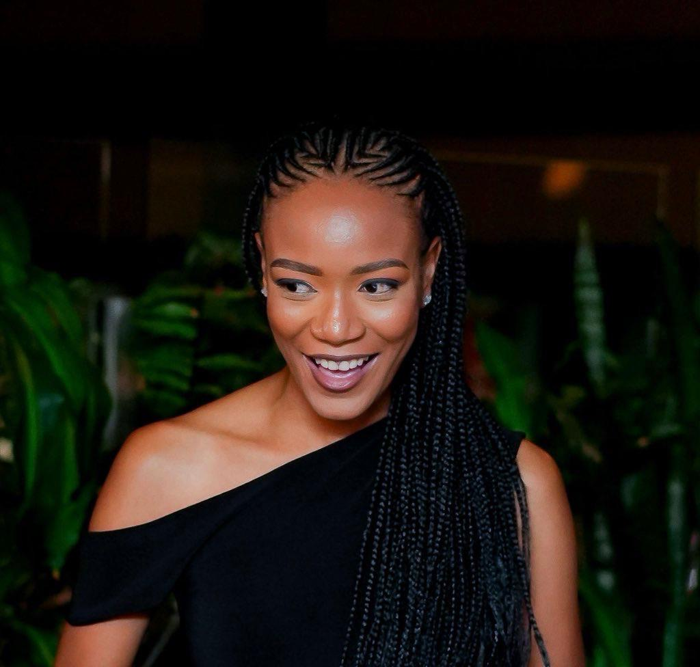

Your strength, your softness.
You're strict, but beneath that is such a loving and kind soul. I love that both can exist in you without cancelling each other out.
Chapter two · the woman behind the smile
The parts of you I notice, admire, and hope you never stop being.
What I see in you

You're strict, but beneath that is such a loving and kind soul. I love that both can exist in you without cancelling each other out.
There is something about being around you that makes the moment feel more alive. And that smile of yours? The genuine moments with you are the ones I want more of.
Your love doesn't just make me happy; it motivates me to become a better person, one day at a time. That's a beautiful thing to receive from someone.
I admire how family-oriented, peaceful and mature you are. You carry a kind of steadiness that I respect deeply.
You make me want to be a better man, without ever asking me to stop being myself.
ONE OF THE MANY REASONS I CELEBRATE YOU.
A few things kept close
Some thoughts deserve a little more than a passing mention. Tap an envelope and let me tell you something from the heart.
There was a point when I realised my feelings for you were becoming something I could no longer easily hide. I kept wanting to tell you I loved you, then holding back because I did not yet know how to explain what was happening to me. It was more than attraction. Your presence, your mind and your energy made me want to grow. I was trying so hard not to say those three words before we were even official. If I could speak to that version of me now, I'd tell him to relax. The feeling he was trying to contain was only the beginning.
I want the big adventures with you, but I want the everyday things just as much: the conversations that go nowhere and everywhere, the laughter, the quiet moments, and the comfort of knowing we are on the same team. I want a love that feels beautiful on special occasions and still feels good on a random Tuesday.
I genuinely enjoy you. Your company, your humour, your thoughts, your laughter and the way we can just be ourselves. I don't only want to love you romantically. I want to keep being your friend, your teammate and the person you can share life's little details with.